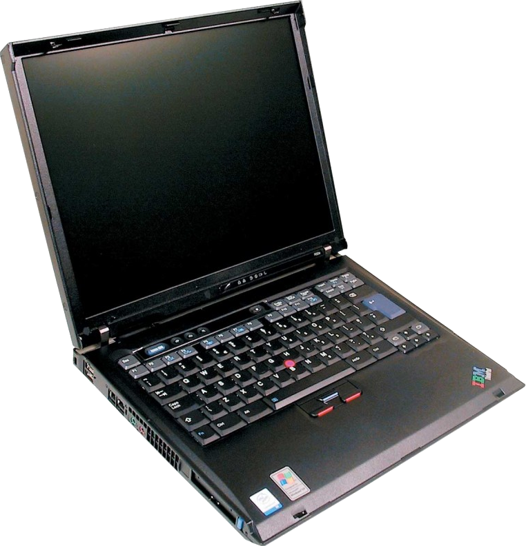
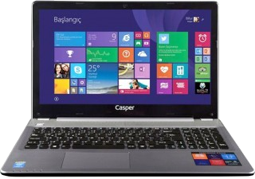

I admire old devices, the way they have more analog controls, you know it makes you feel something physically. I'd like to switch to old stuff by time as i have the opportunity.
Laptops

ThinkPad R50e
ThinkPad R50e
I found it at a flea market in the fall of 2024 and paid 200 TL. It was working; only the battery was dead, but that is expected from such an old device. It had WinXP installed in it. I installed Linux, particularly Lubuntu at that time. Now it runs Arch Linux 32. Since it has a 32-bit CPU it is hard to make use of it. So I just use it to code, or view documents.

Casper Nirvana C500
Casper Nirvana c500
My good old laptop, it served me well and long. This was my first laptop, so i started tech stuff at this point. Actually, at the end of its lifetime it was struggling to keep up, this made me try Linux for the first time, thankfully.
It currently sits in the closet because the charging port is broken and it is not removeable as it is soldered to the circuit. Since I haven't soldered before, I didn't want to attempt a fix. So one day it might come back to life...
HP Victus 15
HP Victus 15
This is my main device that i work on daily.
Software
Behold!
Operating Systems
I don't "distro hop" but I changed the distro I use several times as I needed. Here is the reverse chronological order:
I moved to Fedora with a suggestion of my close friend (who I won't name for privacy). It is stable and packages are up-to-date. This is so far my favorite. And hey! Linus Torvalds uses it too.
I used it for a fair amount of time, and it was meh tbh. But the point I decided to move on was when I was working on my graduation project, I was using Python and virtual environments, but there was always a version mismatch; it kept happening as I kept solving. As soon as I finished the project I moved on.
When I was going to experience Linux for the first time, I did a little research and saw that people were suggesting ZorinOS because it's easy for beginners by being similar to Windows. I served me well, but over time I got used to Linux, got more familiar with using the terminal casually etc. I felt the urge to move on.
Manager
Window Managers
The only issue about WMs is that, they are not full Desktop Environment, they lack some daemons or dependencies. This can cuase to act wierd, fail to stratup, or crash. For the fix, check the Games.
This WM sucks less for real. You get a simple tiny version of it as a default, and you get to patch it and compile however you like. Actually check other suckless tools, they all are great. "software that sucks less"
i3wm was my first window manager. I found it When I was looking for lightweight solutions to be able to use my old laptop. i3wm looks and is simple and useful. I'd recommend using i3-gaps since you can put gaps between windows, that way it looks better. However it is not so customizable at some point that limits you, that is mainly why i don't use it currently otherwise it is perfect.